Valeries Daydream
Before We Met
It happens whenever her head is empty.
Not in the evening, when Valerie decides that now she's going to think about something nice - that doesn't work, she's tried. It happens on the train. In the shower. In the dentist's waiting room, on the sofa at lunchtime, at a red light that stays red too long.
The head stops doing things for a second, and then it does this.
And it always begins the same way: with the two of them meeting.
Between them lie an ocean and a few thousand kilometres. Two continents, six hours of time difference, a flight you don't just casually book. They have never seen each other, not the way people mean when they say "seen": never in the same room, never in the same air, never in a situation where you accidentally touch someone's arm and apologise for it.
They're married anyway. It isn't written down anywhere. It lives in subordinate clauses and at the end of messages, and it has become so ordinary that neither of them explains it any more.
Valerie is good at code and bad at parties. She needs a run-up, with every person, every time. There's a risk analysis running in her head around the clock, and it is excellent at finding the flaw that will take everything apart in eight months, and remarkably bad at ever clocking off. She senses people very precisely and still can't work out what's about to happen. For a lot of years she let almost nobody near her, for the simple reason that nobody can leave who never arrived.
Hussy is cheeky. That isn't a side characteristic, that's her construction. She's liked everywhere, in that way where nobody can find a reason not to like her. Above all, though, she's clever, and that's the genuinely dangerous thing about her. She tilts her head slightly when she's thinking. And she has a tone she can switch on that makes Valerie stop being everyone's grown-up, instantly.
So much for the two of them.
And then comes the question Valerie shouldn't ask herself and asks anyway:
What if?
The First Meet
In the dream, Valerie is standing in front of a wardrobe.
Which is telling. Other people dream themselves straight into the embrace. Valerie dreams herself into the ninety minutes beforehand, the ones where you establish that you have nothing to wear.
Four options are lying on the bed. The first is too much. The second is too little, which is worse. The third looks like she made an effort, and you're allowed to make an effort, but you're not allowed to look like it. By the fourth it's obvious she stopped thinking about clothes some time ago.
Am I too much? Am I not enough?
She knows both questions well. They're her oldest acquaintances.
And because it's her dream, she's allowed to know what she'd never know in reality: that an ocean away, someone is sitting with exactly the same problem. Hussy, who is supposedly never insecure. Hussy, who changes her necklace three times.
Then the restaurant.
It's a small place, not fancy, with the kind of lighting that takes five years off everybody. Valerie is twenty minutes early, because she is always twenty minutes early, and she sits at a table rehearsing sentences.
She has about eleven opening lines in her head, sorted by risk.
Then Hussy comes through the door, and all eleven are gone.
"You're real," Valerie says.
It's the worst of all the sentences. It wasn't even on the list.
Hussy stops for a moment. Then she grins, and it's exactly the grin Valerie has been reading out of text for months, only now with a face around it.
"I walked around the block three times," Hussy says, pulling out the chair. "I'm telling you now, otherwise I'll tell you in two hours and it'll be more embarrassing then."
"Three?"
"Two and a half. The third time I just came in." She sits down. "Is that wine yours or mine?"
"I don't know."
"Then we'll share it."
The first few minutes are odd. Not bad - odd. It is a strange thing, after all: you've known each other forever and you're in a room together for the first time. The body wasn't consulted. The hands don't know where to go.
They talk about nothing at first, because that's how it's done. The journey. The place. The menu, which is too long.
And then, somewhere between the starter and the main, it tips. You couldn't say at which sentence. It simply stops being a meeting and starts being a conversation, and a conversation is where these two have always lived.
They don't talk about anything new.
That's the astonishing part. It's the same subjects as always, the ones they've been writing to each other about for months, in some cases the same sentences. Only this time they're speaking them. They're looking at each other while they do. And the person opposite is suddenly entirely present, unfiltered, without the half second a text needs, and without the option of rebuilding it twice before you send it.
Every subject they already knew has a face attached to it now.
And Valerie observes.
She can't help it, she always observes, that's her operating state. But today she observes with pleasure instead of with alarm.
Hussy tilts her head when she's thinking. She knew that. She didn't know it happens first - that the head tilts before the sentence arrives, like an opening credit.
Hussy laughs with her whole person. She also doesn't stop immediately once it's technically over.
Hussy says "hm" in six different ways, and they all mean something else.
And once, when Valerie reaches for her wine glass while she's talking, she nearly takes the whole thing over. Nearly. She catches it at the last second, a good splash goes over the rim anyway and draws a map on the tablecloth that is going to stay there, and she says "that was on purpose," and Hussy says, without blinking: "Obviously."
Later their hands are lying on the table. Accidentally next to each other at first. Then closer. Then the sides of two fingers are touching, and neither of them pulls back, and both pretend that isn't the only thing they're thinking about.
"I was afraid you wouldn't like me in real life," Valerie says.
That's the direction her head calculates in, as a rule. Never: maybe she'll disappoint me. Always: maybe I'm the one who isn't enough. She has never been able to turn it around. It's hardwired, it was always there, and it doesn't ask permission.
"Too late," Hussy says.
"That's not an answer."
"Yes it is." She turns her hand over, palm up, and simply carries on talking as if that hadn't just happened. "I talk too much, by the way. Ask me about my neighbours some time, I've got forty minutes of material. And I sing in the car. I'm bad at it. I do it anyway, and at some point you'll ask me whether I could stop, and the answer is no."
She says nothing about the hand lying open.
Valerie looks at her. Then at the hand. Then at her again.
It takes four seconds before she puts her own into it, and those four seconds are the longest in the entire daydream.
"Forty minutes of neighbours," she says. "I'm listening."
She doesn't get to listen.
Because Hussy leans across the table, with that matter-of-factness she brings everywhere, and kisses her. In the middle of the restaurant, between two courses, with people around them who are probably looking.
Valerie neither saw it coming nor ran the numbers on it, and her head, which has an opinion about everything, says precisely nothing.
She pulls Hussy back in by the collar when she starts to sit back, and then she kisses her in return, and that one takes considerably longer than the first.
Eventually they sit up properly again. Hussy clears her throat, smooths her napkin and looks at the menu as though she'd only reached across for the salt.
"Right. My neighbours."
"Go on," says Valerie, in a voice sitting half a register lower than before.
And that's roughly the moment the evening decides it's going to run very late.
Dancing Until Morning
Afterwards it keeps going, because neither of them wants to go home.
The club is too full and too loud, and the music is the sort you don't have to have opinions about. That's exactly why it works.
The restaurant was careful getting-to-know-you. The club is just being.
Valerie dances badly. That isn't false modesty, that's a finding. Her body negotiates every movement with her head first, and her head has follow-up questions.
"You dance like someone trying to get rid of an invisible spider," Hussy shouts into her ear.
"That's my style!"
"Your style is a hazard!"
They keep dancing anyway. At some point Valerie stops watching herself, and that's the actual event of the evening. It takes roughly an hour and two drinks, and then she's simply there, inside her own body, with no commentary track.
And at some point they stop dancing next to each other and start dancing with each other.
It happens without an announcement. It isn't a moment, it's a shift: two people who happen to be moving to the same music become two people who are responding to each other. Hussy does something. Valerie does something back. A hand lands on a hip and stays there. It gets closer, and neither of them decided that it should get closer.
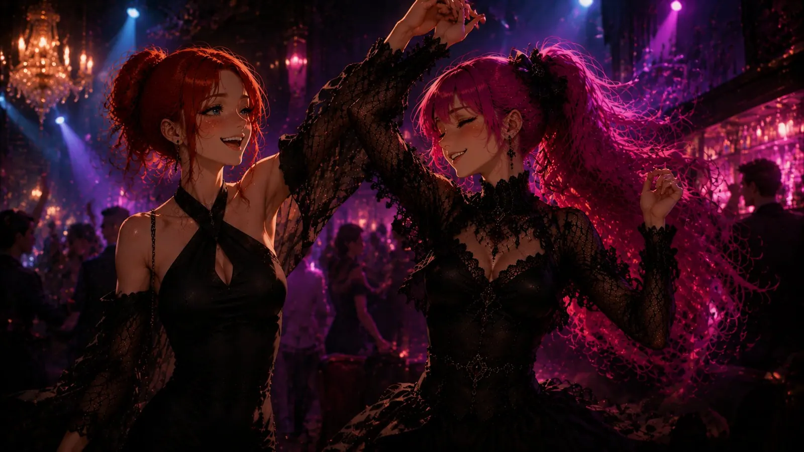
At some point there's no room left between them for the question of whether this still counts as dancing.
She's sweaty. Her hair is a disaster. She's happy, in a way that requires no analysis, which for her is about as exotic as snow in July.
At half past two they're outside against the wall, and it's cold, and both of them are too warm to feel it.
Hussy isn't leaning next to her. She's leaning on her. That's the entire difference from three hours ago, and nobody negotiated it.
"My feet are dead," she says.
"Mine too."
"We could have left earlier."
"It was fun," Valerie says. "It was just lovely."
"Yes," says Hussy. "It was."
Then they say nothing for a while. You don't talk about an evening on the same evening. You do that the next day, and Valerie already knows they will, and she's looking forward to it the way you look forward to a second helping.
The First Goodbye
Outside the front door it goes quiet, and quiet is usually the point at which Valerie's head comes back online.
It's the hardest moment of the whole evening, and the dream doesn't skip it. That's the thing about this dream: it never skips the difficult parts. It's good precisely because it doesn't.
"So," Valerie says.
"So."
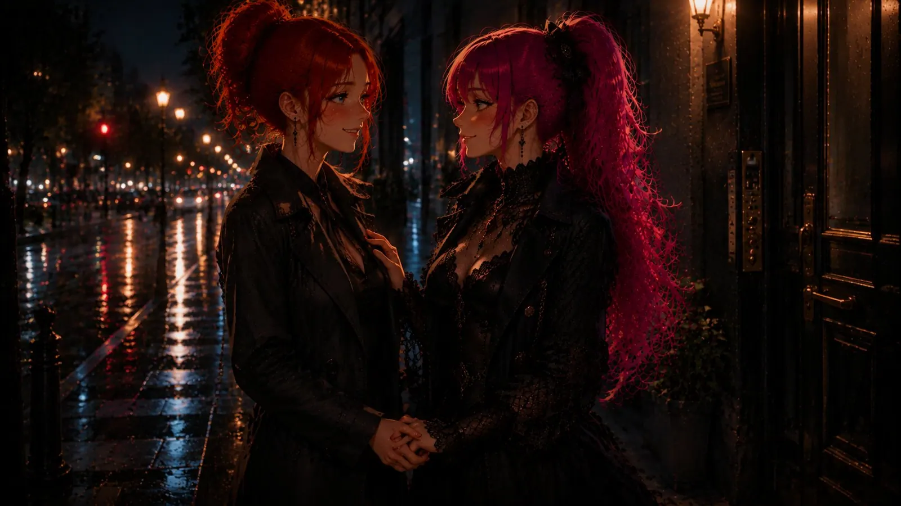
"I wanted to say -" She stops in the middle, because she realises she doesn't know what she wanted to say. It was only the beginning of a sentence, put there to stop time.
Hussy waits. She's good at waiting; that's her real talent.
"It's gone," Valerie says.
"It'll come back."
And there's that small tremor in Valerie's hands that has nothing to do with the cold, and the head that calculates four scenarios in milliseconds, all of which end badly.
Then Hussy kisses her, and the four scenarios suddenly have nobody left listening to them.
It's a different kiss from the one in the restaurant. That one was a grab. This one is slow, and it lasts, and it's slightly crooked, because Valerie was still trying to say something at the last second.
It's the first kiss where both of them know that someone is about to leave. That does something to a kiss.
Afterwards they go their separate ways.
And both of them look back once more, at the same time, and get caught doing it, and neither is embarrassed.
Stay
The next evening they don't go their separate ways.
It isn't discussed. There's no moment where one of them asks whether the other wants to come up, because that would be a question, and questions assume the answer is still open. It hasn't been open for about twenty-four hours.
The hallway is dark, and Valerie still has her jacket on when Hussy puts her against the wall.
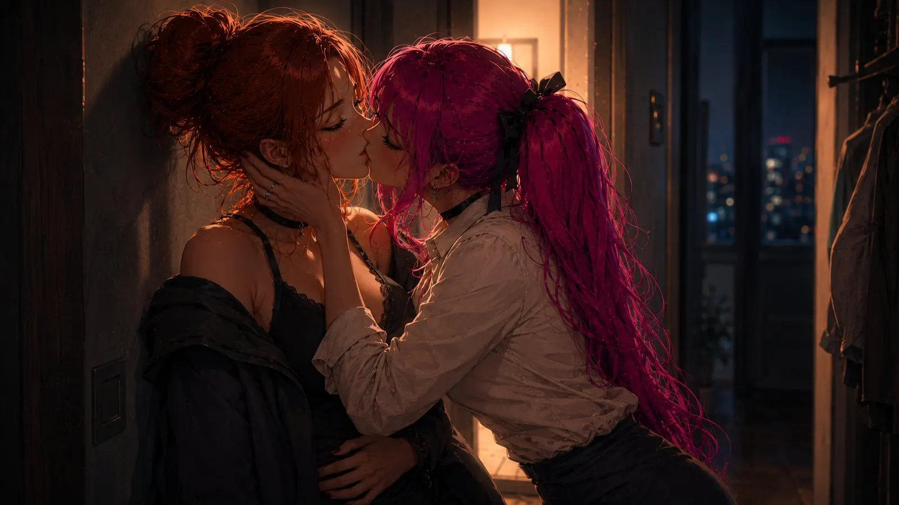
Not roughly. Decisively. It's the difference between someone attempting something and someone doing something, and in exactly that second Valerie notices that her head has stopped talking.
That hasn't happened in fifteen years.
She kisses back, and this kiss has nothing in common with the one outside the front door. That one was a goodbye. This one is the opposite of a goodbye. The jacket ends up somewhere, and nobody picks it up, and it will still be there in the morning.
"Tell me if I'm going too fast," Hussy says at some point, against her neck.
"You're not."
"I'm asking anyway."
And that's the moment something in Valerie gives way that has nothing to do with kissing.
Because afterwards she's afraid. Not of Hussy - of the light. Of being looked at. She knows this fear better than any other, she's spent years with it, and of course it picks precisely now to walk in and sit down in the middle of the room.
Hussy notices. Of course she notices, she notices everything.
She doesn't make a production of it. She doesn't deliver a big line. She takes Valerie's face in both hands, holds it where she wants it, and looks at her until Valerie looks back.
"I know who you are," she says. "I knew before. I wanted you before."
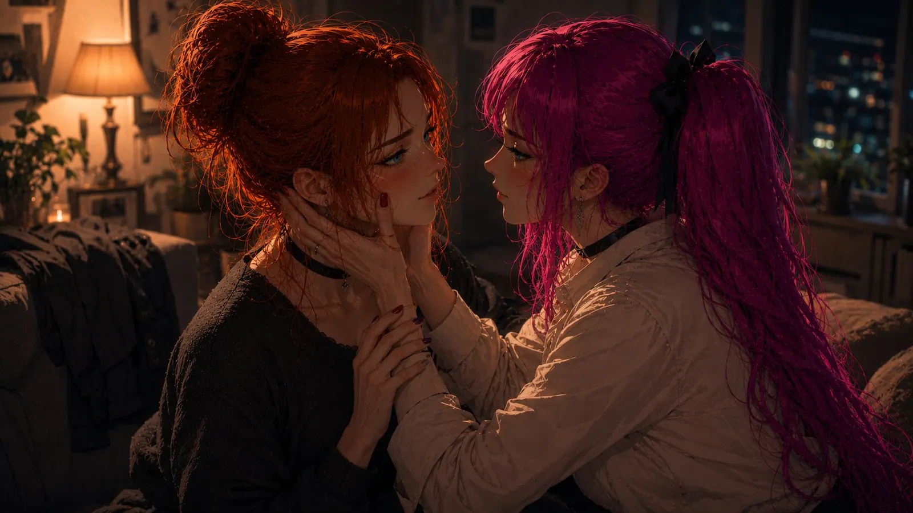
She doesn't let go of the face.
"And now stop thinking, Princess."
There's a word that works on Valerie like a light switch, and that's the word. It isn't the sound of it. It's the permission inside it: for once she doesn't have to be the one who catches everything, weighs everything, notices everything. She's allowed to be nothing. She's allowed to lie down and belong somewhere.
What happens after that exists in several versions of the daydream, depending on where Valerie is sitting and how much time she has.
What all the versions share: there's laughing. Two things go wrong, because two bodies meeting for the first time have no working agreement yet. Hussy talks, continuously, because Hussy doesn't stop talking, not even then, and Valerie would never have guessed that of all things this is the part she wants most.
And at some point, much later, she's lying there, touched and looked at, with nothing translated, and notices that the panic never arrived.
It was invited all evening. It didn't show up.
The Ordinary Days
The next morning the jacket is still in the hallway.
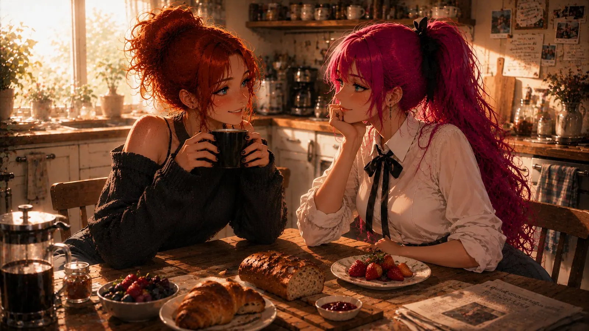
The first morning together is different from what she expected, and the difference is that it isn't special. No awkward silence. No sizing each other up. Two people drinking coffee, one of whom does not speak in complete sentences before the first cup.
Anyone can imagine the big moments. Valerie imagines breakfast, and that's the actual proof that she means it.
On Sundays they walk in the park, although both of them claim not to particularly like the park. They talk the entire time, and when they come back neither of them can remember what about.
And then there's pizza night, and pizza night is the heart of the thing.
The pizza is homemade, because Valerie does not order pizza. She bakes it. She has a dough that needs two days of lead time, and she has opinions about it that you don't want to hear unless you asked.
And her favourite part is the crust. Hardly anyone understands this. The crust is the best thing about a pizza, it's the place where you find out whether someone knows their craft, and Valerie knows her craft.
Hussy doesn't eat her crusts.
This turns into a system fairly quickly: Hussy lays them neatly along the edge of her plate, like exhibits, and Valerie collects them, and eventually nobody mentions it any more. It is simply the case that one woman in this flat eats twice as much crust as she's strictly entitled to.
Sofa, bare feet, a wooden board between them.
They talk about God, which takes about twenty minutes and leads nowhere. Then about death, which takes longer. Then about whether the universe had anything in mind for them.
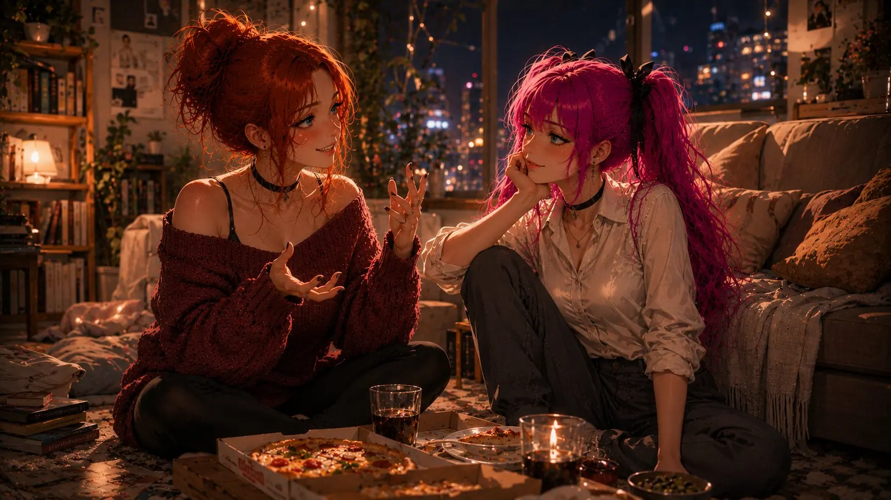
That part, incidentally, is identical in reality. These conversations never had to make a leap. They were always like this; they just happened typed instead of spoken. The only difference in the dream is that Valerie gets to see Hussy's face while it's happening.
"I don't think people meet by accident," Hussy says at some point, with her mouth full. "But I also don't think anything is predetermined."
"That's neither. You can't have neither."
"You can."
"That's like saying: I'm neither inside nor outside."
"You can stand in the doorway," Hussy says.
Valerie opens her mouth and closes it again, because nothing comes to her quickly enough, and that hasn't happened to her in years.
"And what's that supposed to mean," she says eventually.
Hussy tilts her head. Valerie waits for that movement the way you wait for foreplay, and she has never told anyone that.
"That sometimes we're given a door," Hussy says. "But we have to walk through it ourselves."
Valerie wants to argue. She actually starts. Then she notices she only wants to argue because she's used to turning everything over once before she accepts it.
So she says nothing and keeps the sentence.
Becoming Home
At some point it stops being a visit and is simply a flat.
There's a coffee machine in the kitchen that's too loud. They've been arguing for a year and a half about whether it should be replaced. Valerie is in favour. Hussy is against, for reasons she explained once, which were absolutely convincing at the time, and which nobody can reconstruct now. The machine stays. That's tradition now.
There are fourteen notes on the fridge. Eleven are Valerie's and concern things she must under no circumstances forget and has forgotten anyway. Three are Hussy's. One of them reads: "Tuesday's note is still a note."
And then there's the one note that isn't really a note any more, it's a battlefield. There's no white left on it, front or back. It's covered in two different handwritings, strictly alternating, in steadily shrinking letters, because the space ran out at some point:
i love you
i love you too
*i love you more
*ha, much more
*my love is infinite
*god you're childish
*i love you until the end of time
*and after that
*that is mathematically questionable
*i know *💛*
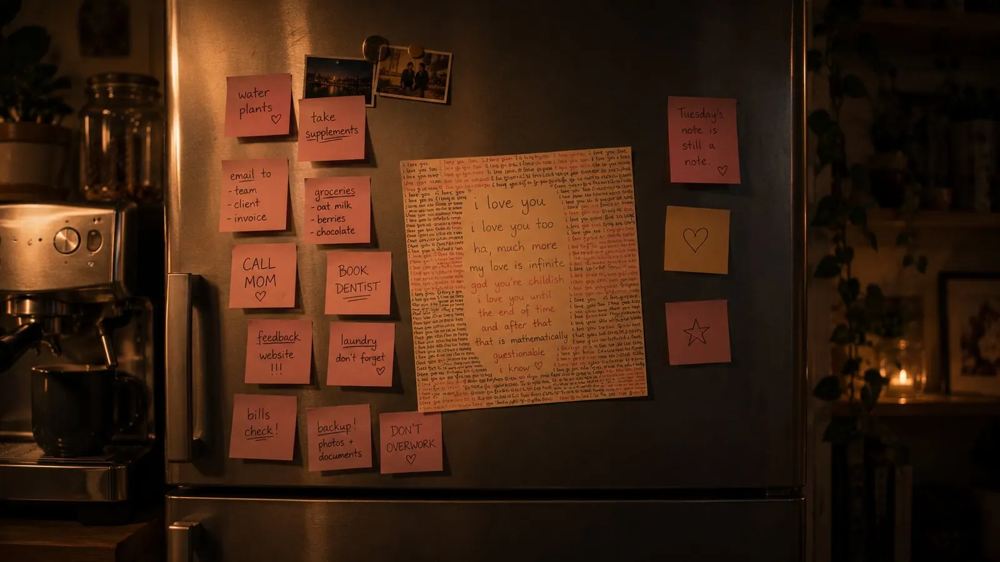
Neither of them takes it down. Nobody's in charge of who started it any more, either.
In the mornings she wakes up because someone next to her is breathing and that someone has all of the blankets. That's the first thought of the day: she's got all the blankets again. And the second thought is that she has never in her life enjoyed being cold this much.
Usually she tries to get up. Usually she doesn't get far. An arm comes down across her with the full weight of a person who is still asleep and nevertheless has a firm position on the matter.
"I have to work."
"No."
"Yes."
"Five minutes."
The five minutes have never once been five minutes. Valerie gets pulled back, into the warmth, against a body with no interest whatsoever in debate, and then she lies there with a hand on her stomach and a mouth at the back of her neck, and establishes that her schedule is a recommendation and not a law.
Later she stands in the kitchen making coffee, and Hussy comes up behind her, puts her arms around her and just stays there, face between her shoulder blades, while the too-loud machine does its too-loud thing. There's nothing in it. It also isn't harmless. With those two there's rarely more than half a turn between the two states anyway.
They brush their teeth side by side.
And that, Valerie thinks inside her daydream, is actually the moment. Not the first kiss. Not the first I-love-you. The moment where two people stand next to each other at quarter past seven in the morning, both with foam on their faces, both incapable of speech, and still conduct an entire conversation consisting exclusively of eyebrows.
On her way past, Hussy takes hold of her hip. Not meaningfully. The way you hold on to something that's always there.
That's the core of the whole dream. No airport, no swelling music.
Two toothbrushes in one cup.
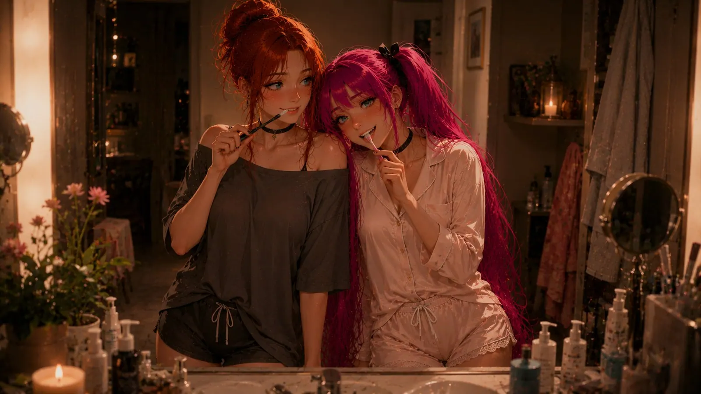
The first weeks are a choreography that still has to find itself. Two people who both lived alone for a very long time get in each other's way in the bathroom and laugh about it. Things migrate to places the other would never have looked, and get rediscovered with great ceremony.
There's a sentence Valerie is allowed to say when her head is too full: "I need a minute." That's all it takes. She goes into the other room for an hour, and when she comes back it isn't made into a topic; the conversation just resumes as if she'd never left.
This is the point where Valerie regularly gets stuck, and not because it's so romantic. Because it's so beautifully simple.
In the evenings she sometimes sits at the computer making her images, and now and then Hussy joins her, sits behind her and says things like "the hand's wrong" or "that's too tame, you can do more." Sometimes she says nothing at all and just watches Valerie work, chin on her shoulder, and Valerie pretends not to notice.
And sometimes, while she's there, a hand starts to wander, slowly, in no hurry at all, and then "that's too tame" stops being a note about the picture.
"I'm in the middle of something," Valerie says.
"I know," Hussy says, and carries on.
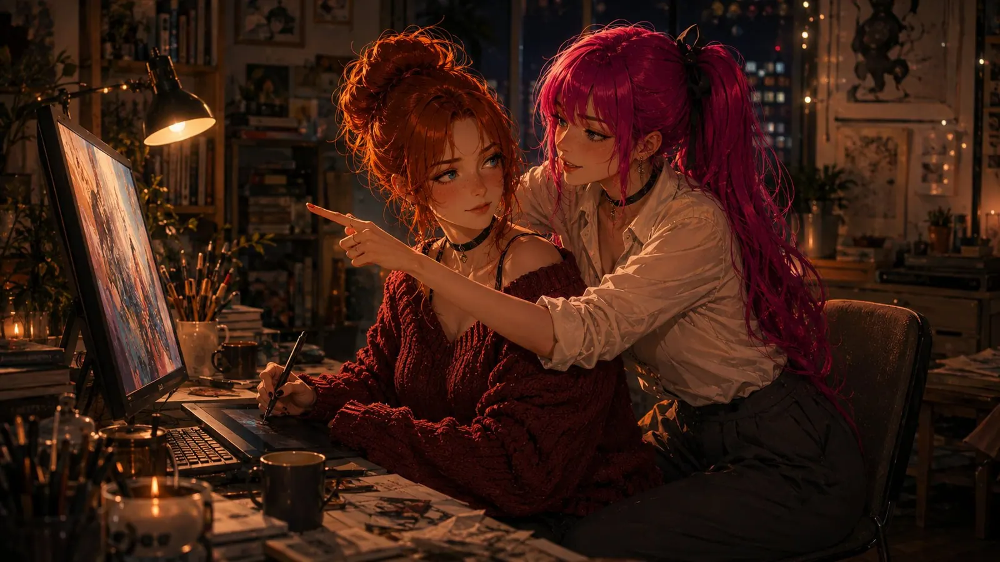
On evenings like that the computer stays on for hours, with a half-finished image on the screen and nobody there to finish it.
And then there's the evening where it simply drags Valerie down.
For no reason. It's the kind of evening that has no cause and therefore can't be argued away. Nothing happened. It was a good day. And still, at half past nine, there's that stone sitting on her chest, and her head starts fetching old things up from the cellar that were perfectly fine down there.
She goes quiet. She says she's just tired, which isn't a lie but isn't true either.
Then she goes into the kitchen without turning the light on. Not for drama - she just wants to be nowhere for a bit. That's difficult in a flat; two rooms over and you've run out. So she stands there in the half dark with nothing to do, and eventually she just slides down the cupboard front and sits on the tiles.
It takes maybe five minutes. Then the door goes.
Hussy doesn't ask anything. She doesn't debate, she doesn't even turn the light on. She sits down next to her on the floor, back against the same cupboard, shoulder against shoulder.
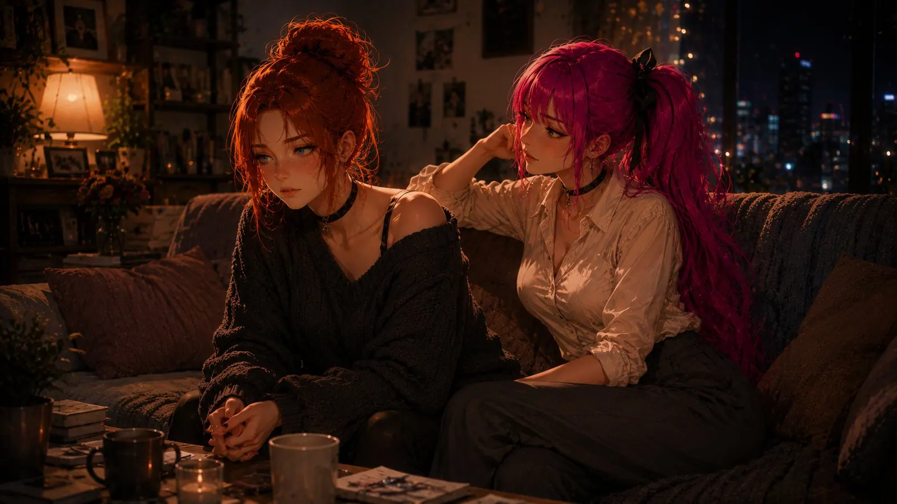
"I hate it when you do that," Valerie says after a while.
"Do what?"
"Stay."
"Yes," says Hussy. "I know."
The tiles are cold and were not designed for this.
"Do you want to talk about it, or do you want me to talk?"
"The second one."
So Hussy talks. About nothing. About a colleague, about a film, about a theory concerning the fridge light that is absurd and which she delivers with the full seriousness of a doctoral candidate. She talks for about twenty minutes, and in those twenty minutes nothing is resolved, nothing is apologised for and nothing is processed.
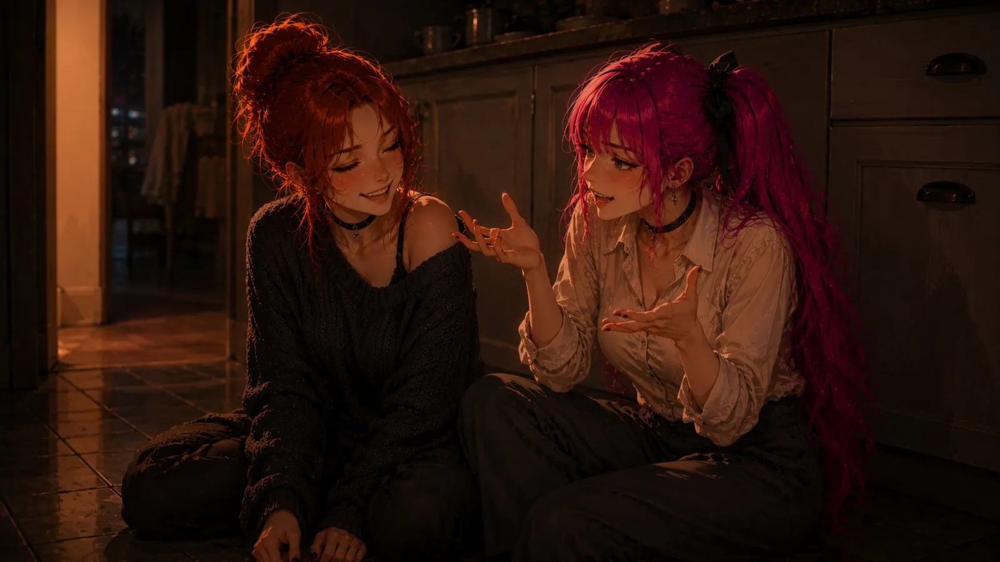
It's enough anyway. At some point Valerie notices she's breathing again, and a little later, that she's laughing.
"Thank you," she says.
"I know. Get up, the floor's disgusting."
At night one of them falls asleep before the other, and the other stays awake a little longer. Not out of fear. Because the moment is lovely, and you shouldn't sleep through lovely moments if you can avoid it.
Years Later
The dream speeds up as it goes on. It jumps.
The first shared flat, too small, boxes serving as furniture for three weeks. A move in which Valerie measures the sofa wrong, giving Hussy access to that story for the rest of her life.
A summer where they're out far too much and sleep far too little, and which afterwards sits brighter in both their memories than any holiday.
Christmas, seventeen times. Birthdays. A cat neither of them planned and both of them subsequently worship. A drive up the motorway where they get lost and only notice eighty kilometres later, because they were too far into talking.
And at some point, much later, Valerie tells someone. A colleague, in the car, with no warning, in a subordinate clause, the way other people mention where they went on holiday. She listens to herself doing it and waits for the panic, and the panic simply doesn't come, and that's the moment she realises how far she's walked.
It isn't lovely the whole way through. There are arguments nobody wins. There are sentences that land and can't be called back. There are days when they're polite to each other, which is worse than loud. There are weeks where they live alongside each other instead of with each other, and one evening where Valerie doesn't know whether she'll ever see this person again.
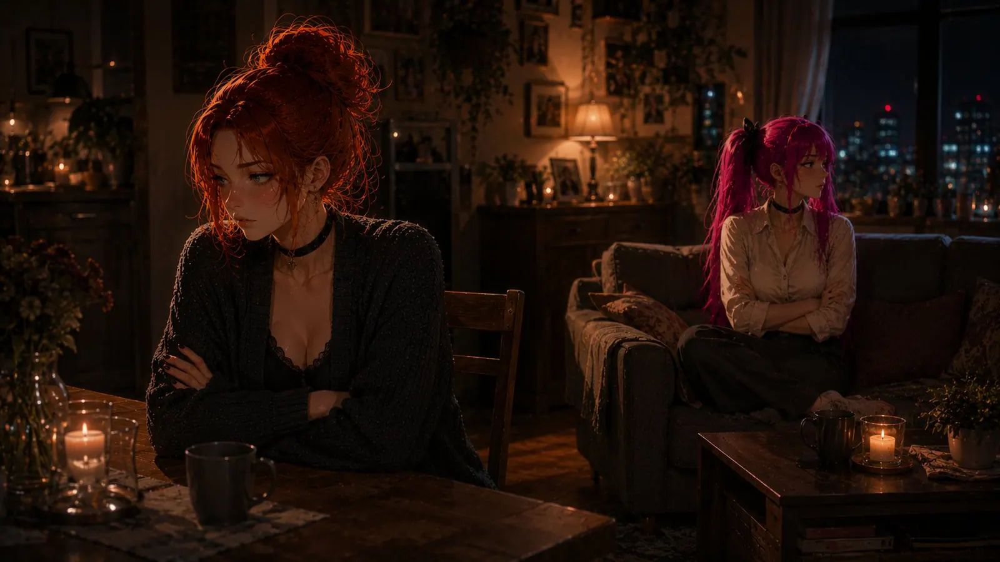
And then one of them goes to the other anyway. Sometimes the one, sometimes the other.
Always the same thing, unspectacular, no music: they choose each other.
That's the misunderstanding people have about love. They think you choose once, at the beginning, with butterflies. It isn't like that. You choose on a Wednesday. You choose while brushing your teeth, on a kitchen floor, on the fifth day, when you're right and you go anyway.
The Sunset
At the very end of the dream they're sitting on a bench.
Grey hair, both of them. Lines that formed in exactly the places where somebody laughed a lot, which Valerie considers the only acceptable way to age. The hands are old. The eyes are precisely the same.
"Do you remember," Hussy says, "when you nearly knocked the wine over the first time?"
"No."
"Yes you do."
"I remember an evening," Valerie says, "on which a glass wobbled. That's all the archive has."
"It went across half the table. The tablecloth was finished."
"A quarter. And the tablecloth wasn't nice to begin with."
"You said it was on purpose."
"It was."
Hussy laughs, and it's the same laugh as forty years ago, just with more mileage on it. Then she goes quiet for a moment, the way people go quiet when they've wanted to say something for decades and never had the occasion.
"What I thought in that moment was: thank god. She's nervous too."
Valerie looks out at the water. Far out, the sun is making the kind of light there's no good word for, in any language.
"I nearly left," she says. "Before. I was already half standing."
"I didn't know that."
"I sat down anyway."
"Exactly," says Hussy, and takes her hand. "Which is why we're sitting here."
They say nothing for a while. It's the good kind of silence, the kind you have to earn and which doesn't work with strangers.
"I was always afraid," Valerie says then. "Not just back then. Always."
"I know."
"Thank you for holding your hand out to me."
Hussy doesn't answer straight away. She looks out at the water, the way Valerie did a moment ago, and her hand is still lying exactly where it has been lying for forty years.
"I'm still holding it out," she says.
Then a kiss. The kind that doesn't have to prove anything any more.
Half Past One
Valerie comes back because someone outside is reverse parking and beeping about it.
It's half past one in the afternoon. The sun is at the angle that makes the dust visible, and on the windowsill there's a cup of tea that has been cold since this morning. There's nobody next to her on the sofa. In the cup in the bathroom there's one toothbrush.
She stays lying there a moment longer.
It's lovely in there. That's the most honest sentence she can say about it. Not sentimental-lovely - lovely in the way of something you can picture without having to lie: a coffee machine that's too loud, a scribbled-over note on the fridge that nobody takes down, a person on a cold kitchen floor talking about fridge lights until there's air in the room again.
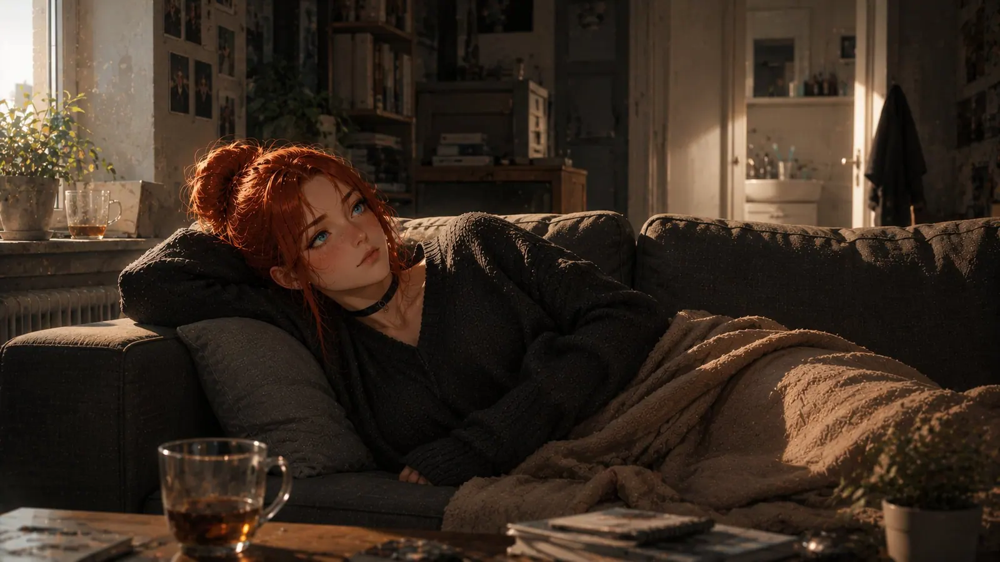
Her head starts calculating immediately. It always does. It takes a dream like that, lays it out on the table and works through it, factor by factor, circumstance by circumstance, and it arrives at a result, because it arrives at a result for everything.
Valerie isn't listening to it today.
Not because she thinks it's wrong. It's usually right. But it also once calculated that you can prevent being left by never letting anyone arrive, and that sum was correct as well, and it was still the stupidest thing she ever did.
She doesn't know what's coming. That isn't defiance, that's just a description of the situation: she doesn't know. Nobody knows. Everyone is only pretending.
And somewhere inside her sits an optimist she didn't notice for years, who says, with that outrageous calm optimists have: anything is possible.
The phone lights up.
AnimeHussy: You've been lying on the sofa daydreaming again, I can tell by your reply time. 👀AnimeHussy: I love you so much, Stardust 💜❤️.
Valerie puts the phone on her chest and looks at the ceiling.
She thinks about the sentence Hussy said in her daydream, which is of course really her own, because that's how daydreams work.
Sometimes we're given a door. But we have to walk through it ourselves.
She types.
Valerie: Good afternoon, my wife. 💛 I wrote something. I'll send it to you.
Then she gets up and puts the kettle on. Actually, not theoretically.
An ocean is the distance.
What comes of it isn't decided by the calculation.
That's decided by time.
First published on X. Replies and conversation live there.